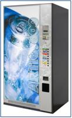

Контактная
информация
информация
Адрес:ул. Явар Алиев 22
Баку, Азербайджан AZ 1026,
Tel.: 012 424 31 48
E-mail: vending@vento.az
Artic 600

Jofemar Artic 600 – автомат для продажи прохладительных напитков в банках и бутылках, с наибольшей вместимостью для обоих форматов. Его новая система выдачи позволяет вмещать 324 бутылок или 600 банок. При его создании были использованы последние достижения энергосбережения, такие как:
* использование специальной пены в корпусе, для наилучшей изоляции.
* независимое программирование и настройка размеров каналов (до 6) со связью с кнопками выбора.
* 2-х строчный дисплей для отображения количества денег, времени, цены продукта и программирования.
* непрерывное самотестирование во время работы -
* износоустойчивая мембранная клавиатура
В цену стандартной комплектации входит:
* Банкното приемник BT-10,
* монето приемник J-2000 с функцией сдачи производства JOFEMAR (Испания),
* функция легкой универсалбной настройки под любой тип банок или бутылок. Светодиодная подсветка.
Дополнительно:
* Устройство для чтения электронных карт
* Установка телефона
Параметры:
* габариты: 1825 х 1000 х 857 мм
* вес без деревянных стоек: 350 кг.
* холодильная установка без фреона: экологически чистый газ R-134А.
* корпус модульного типа, с антикоррозийной обработкой и системой защиты от взлома.
* электропитание: 220 вольт переменного тока +/- 10%
* максимальное энергопотребление 600 Вт
* максимальный ток 10 А
Отличительные преимущества аппарата:
* антивандальные противовзломные копуса.
* корпус изготовлен из 1,5 мм коррозиеустойчивой стали.
* большие рекламные панели с светодиодной подсветкой.